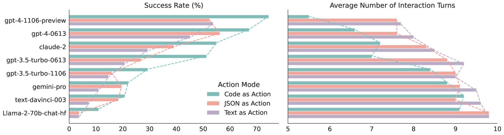

Kod Yürütmeyle Planlama
Bir dil modelinin planı yalnızca metin ya da JSON olarak yazması yerine, planı çalıştırılabilir kod biçiminde ifade etmesi karmaşık veri sorularını daha esnek ve güçlü biçimde çözebilir.
Kapsam ve Bağlam
Bu ders, yüksek özerklik düzeyine sahip agent sistemlerinde planlamanın özel bir biçimini inceler: modelin adım adım bir araç listesi üretmesi yerine, çözüm adımlarını programlama dili içinde ifade etmesi. Böylece plan, yalnızca okunacak bir taslak olmaktan çıkar; gerektiğinde doğrudan çalıştırılabilen bir eylem dizisine dönüşür.
Temel problem, araç temelli planlamanın veri işleme gibi görevlerde hızla kırılgan hale gelmesidir. Bir satış tablosu üzerinde ay, ürün, fiyat, tarih ya da benzersiz işlem gibi farklı sorular geldiğinde, her yeni soru için yeni bir özel araç tanımlamak sürdürülebilir değildir. Kod yürütmeyle planlama, bu araç patlamasını azaltır: model, zaten güçlü bir veri işleme kütüphanesinin geniş fonksiyon kümesini kullanarak planını kod olarak kurar.
Merkez fikir
Planlama, modelin ne yapacağını önceden sabit komutlarla sınırlandırmak değildir; modelin amaca ulaşmak için uygun ara adımları seçmesine izin vermektir. Kod yürütme yaklaşımında bu ara adımlar, filtreleme, sıralama, tarih dönüştürme, benzersiz kayıt sayma veya liste çıkarma gibi işlemlerle somutlaşır.
Öğrenme Hedefleri
- Araç temelli planlamanın neden belirli veri sorularında kırılgan ve verimsiz hale geldiğini açıklayabilmek.
- Kodun bir plan ifade biçimi olarak nasıl kullanılabileceğini sezgisel ve teknik düzeyde anlayabilmek.
- Bir kullanıcı sorusunun kod içinde hangi ara adımlara ayrıldığını okuyabilmek.
- Kodla eylem, JSON ile eylem ve düz metin planlama arasındaki performans farkını yorumlayabilmek.
- Kod yürütmenin sağladığı esnekliği güvenli yürütme ve kontrol kaybı riskleriyle birlikte değerlendirebilmek.
Ön Koşullar
- Bir dil modelinin araç çağırabileceği ya da yapılandırılmış çıktı üretebileceği fikrine aşinalık.
- Tablo biçimindeki verilerde satır, sütun, filtreleme, sıralama ve özet istatistik kavramlarını temel düzeyde bilmek.
- Python ve pandas benzeri veri işleme kütüphanelerinin, tablo üzerinde çok sayıda hazır işlem sunduğunu sezgisel olarak bilmek.
Notasyon ve Terim Tablosu
| Terim | Bu Dersteki Anlamı | Dikkat Edilecek Nokta |
|---|---|---|
| Plan | Bir kullanıcı sorusunu yanıtlamak için izlenecek ara adımlar dizisi. | Plan, düz metin olarak kalabilir ya da çalıştırılabilir kod biçiminde ifade edilebilir. |
| Araç | Modele verilen, belirli ve sınırlı bir işlemi yapan fonksiyon. | Araç sayısı arttıkça sistem daha karmaşık ve bakımı zor hale gelebilir. |
| Kodla eylem | Modelin çözümü yürütülebilir program kodu olarak üretmesi. | Kod, birçok küçük aracı tek tek çağırmak yerine geniş bir kütüphane ekosisteminden yararlanır. |
| JSON ile eylem | Modelin yapılacak işlemleri yapılandırılmış JSON çıktısı olarak belirtmesi. | JSON çoğu zaman başka bir yürütme katmanına çevrilmek zorundadır. |
| Sandbox | Üretilen kodun sınırlandırılmış ve güvenli bir ortamda çalıştırılması. | Kod yürütme gücü arttıkça güvenli çalışma ortamı daha kritik hale gelir. |
| Etkileşim turu | Görevi tamamlamak için model ile çevre arasında gerçekleşen adım sayısı. | Plan kod olarak ifade edildiğinde bazı görevlerde daha az turla sonuca gidilebilir. |
Büyük Resim
Kod yürütmeyle planlama, modelin kendisine verilen dar araç kümesine sıkışması yerine, bir programlama dili ve veri işleme kütüphanesi üzerinden daha zengin bir eylem alanına erişmesini sağlar. Ana akış beş parçaya ayrılabilir.
Neden güçlü?
Bir programlama dili, tekil araç listesinden çok daha geniş bir işlem uzayı sunar. Model, daha önce çok sayıda örnekte gördüğü kütüphane fonksiyonlarını bir araya getirerek, her yeni kullanıcı sorusu için ayrı bir araç yazılmasına gerek kalmadan karmaşık planlar kurabilir.
Araçlarla Planlamanın Kırılganlığı
Basit bir araç setiyle çalıştığınızı düşünün: belirli bir sütunun ortalamasını almak, maksimumu bulmak, satır filtrelemek ya da satırları toplamak gibi işlemler mevcut olsun. İlk bakışta bu araçlar bir satış tablosu için yeterli görünebilir. Ancak soru biraz karmaşıklaştığında plan hızla uzar.
Model
Tabloya dair doğal dilde gelen soruyu yanıtlamaya çalışır.
Dar araç kümesi
Sonuç
Araçlar yalnızca önceden düşünülmüş işlemleri kapsar; yeni soru türleri yeni araç isteyebilir.
Örneğin belirli bir ürün için en yüksek satış ortalamasına sahip ayı bulmak, her ay için ayrı filtreleme ve özetleme adımları gerektirir. Daha da önemlisi, benzersiz işlem sayısını veya en son işlemlerin tutarlarını istemek mevcut araç kümesinin dışına çıkabilir. Bu durumda geliştirici yeni araç ekler; sonra başka bir soru gelir ve bir araç daha gerekir.
Dar araç yaklaşımı
Her araç küçük ve kontrollüdür; ancak sistem, beklenmeyen veri sorularında büyüyen bir araç listesine bağımlı hale gelir.
- Edge case sayısı artar.
- Bakım maliyeti yükselir.
- Plan çok fazla ara çağrıya bölünür.
Kodla plan yaklaşımı
Model, tek tek özel araçlar yerine veri işleme kütüphanesinin geniş işlem repertuvarını kullanarak planı kod içinde kurar.
- Yeni soru türlerine daha esnek uyum sağlar.
- Ara adımlar tek kod akışında birleşir.
- Yürütme sonucu doğrudan hesaplanabilir.
Planı Kod Olarak İfade Etmek
Kod yürütme yaklaşımında modele verilen temel yönerge şudur: kullanıcı sorusunu çözmek için kod yaz ve çalıştırılacak bölümü belirgin etiketlerle sınırla. Böylece modelin ürettiği metin içinden yürütülecek kod parçası ayrıştırılabilir.
Son işlemlerin tutarını çıkarma
İlk örnekte plan, veriyi yüklemek, tarih sütununu gerçek tarih tipine çevirmek, kayıtları tarihe göre sıralamak ve son beş işlemin fiyat alanını listelemek olarak ayrışır.
<execute_python>import pandas as pd# Load CSVdf = pd.read_csv("transactions.csv")# Ensure date column is parsed as datetimedf["date"] = pd.to_datetime(df["date"])# Sort by date to get most recent transactionsdf_sorted = df.sort_values(by="date", ascending=False)# Select the last 5 transactionslast_5 = df_sorted.head(5)# Show just the price column (amounts)print("Last 5 transaction amounts:")print(last_5["price"].to_list())</execute_python>Geçen haftaki benzersiz işlem sayısını bulma
İkinci örnekte planın yapısı değişir: tarih penceresi tanımlanır, yalnızca bu pencereye düşen satırlar seçilir, yinelenen kayıtlar atılır ve kalan satır sayısı hesaplanır.
<execute_python>import pandas as pd# Read CSV and parse the "date" column as datetimedf = pd.read_csv("transactions.csv", parse_dates=["date"])# Define time windowtoday = pd.Timestamp.today()week_ago = today - pd.Timedelta(days=7)# Filter rows where date is within last weeklast_week = df[df["date"].between(week_ago, today)]# Drop duplicate rows and countprint(last_week.drop_duplicates().shape[0])</execute_python>Kritik ayrım
Bu örneklerde model, yalnızca hangi aracı çağıracağını seçmiyor; problemi programlama dili içinde yeniden formüle ediyor. Bu nedenle plan, hem daha açık bir ara işlem dizisine hem de çalıştırılabilir bir çözüme dönüşüyor.
Performans Kanıtı
Karşılaştırmalı sonuçlar, kodu eylem biçimi olarak kullanan yaklaşımın birçok modelde daha yüksek görev tamamlama oranı verdiğini gösterir. Aynı karşılaştırmada JSON ya da düz metinle eylem planı yazdırmak da işe yarayabilir; ancak kod, özellikle veri işleme gibi programla ifade edilmesi doğal görevlerde daha güçlü bir temsil sunar.

Güvenli Yürütme ve Kontrol Sınırları
Kod yürütmeyle planlama güçlüdür; fakat gücü nedeniyle daha dikkatli tasarlanmalıdır. Modelin ürettiği kod, dosya okuma, veri işleme ya da dış sistemlerle etkileşim gibi işlemler yapabilir. Bu nedenle kodun nerede, hangi izinlerle ve hangi sınırlar içinde çalıştırılacağı baştan düşünülmelidir.
Kazanç
Model, geliştiricinin önceden tanımladığı dar araç listesine bağlı kalmadan, göreve uygun ara adımları kendisi kurabilir.
- Daha zengin planlar oluşturur.
- Veri sorularına esnek yanıt verir.
- Agentik yazılım geliştirme gibi alanlarda karmaşık iş akışlarını taşıyabilir.
Risk
Geliştirici her adımı önceden belirlemediği için çalışma zamanında tam olarak ne olacağını öngörmek daha zordur.
- Güvenli yürütme ortamı gerekir.
- İzinler sınırlandırılmalıdır.
- Çıktı ve yan etkiler izlenmelidir.
Uygulama ilkesi
Kod üretimini planlama aracı olarak kullanmak, modeli serbest bırakmak anlamına gelmemelidir. Güvenli sınırlar, izin modeli, çıktı denetimi ve hata yakalama, bu yaklaşımın temel parçalarıdır.
Agentik Sistemlerde Yeri
Kodla planlama, özellikle agentik yazılım geliştirme araçlarında güçlü biçimde görünür. Karmaşık bir yazılım parçası istenince sistem önce alt bileşenleri planlayabilir, sonra her bileşeni sırayla oluşturabilir ve aralarda test ya da kontrol adımları çalıştırabilir. Bu, planın yalnızca sözlü bir liste değil, yürütülebilir ve denetlenebilir bir iş akışı haline gelmesine yakındır.
Buna karşılık, her uygulama kod yürütmeyi gerektirmez. Özel araç çağrıları hâlâ yararlıdır; özellikle alan bilgisi çok belirgin, işlemler dar ve güvenlik sınırları sıkıysa özel araçlar daha kontrollü bir seçenek olabilir. Kod yürütmeyle planlama en çok, görev doğal olarak kodla çözülebiliyor ve modelin geniş kütüphane repertuvarından yararlanması anlamlı oluyorsa değer kazanır.
Yaygın Hatalar
| Hata | Neden Sorun Yaratır? | Daha Sağlam Yaklaşım |
|---|---|---|
| Her soru için araç eklemek | Araç listesi hızla büyür ve sistem yeni edge case'lerle boğuşur. | Programlama diliyle ifade edilebilen görevlerde kod yürütme seçeneğini değerlendirmek. |
| Kodu sınırsız çalıştırmak | Üretilen kod beklenmeyen dosya, ağ veya sistem işlemleri yapabilir. | Yürütmeyi güvenli, sınırlandırılmış ve izlenebilir bir ortamda yapmak. |
| Planı yalnızca metin saymak | Düz metin plan, yürütme katmanına çevrilirken belirsizlik üretir. | Uygunsa planı doğrudan çalıştırılabilir kod ya da açık yapılandırılmış eylem olarak temsil etmek. |
| Performansı tek metrikle okumak | Başarı oranı yüksek olsa bile etkileşim sayısı, güvenlik ve kontrol maliyeti göz ardı edilebilir. | Başarı, tur sayısı, güvenlik ve bakım maliyetini birlikte değerlendirmek. |
Son Çıkarımlar
- Kod yürütmeyle planlama, agentin planını çalıştırılabilir bir işlem dizisi olarak ifade etmesini sağlar.
- Dar araç kümeleri, veri soruları çeşitlendikçe kırılgan ve bakım maliyeti yüksek hale gelebilir.
- Programlama dili ve veri işleme kütüphaneleri, modele çok daha geniş bir eylem repertuvarı sunar.
- Kodla eylem yaklaşımı, birçok modelde JSON ya da düz metinle eylem yaklaşımlarından daha yüksek görev başarısı gösterebilir.
- Bu güç, güvenli yürütme ortamı ve daha dikkatli denetim gerektirir.
- Planlama, özellikle agentik kodlama sistemlerinde olgunlaşmış görünür; diğer uygulamalarda ise hâlâ dikkatli tasarım gerektiren gelişen bir desendir.
Özet cümle
Kullanıcı sorusu kodla doğal biçimde çözülebiliyorsa, modelin planı kod olarak yazması hem daha zengin bir plan temsili hem de daha doğrudan bir yürütme yolu sağlayabilir.